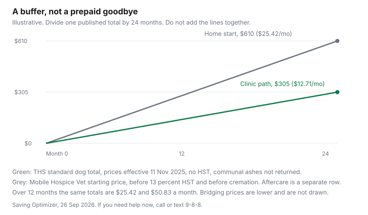

Pets · Canada
End-of-Life Costs for Pets in Canada: Euthanasia, Cremation and Planning Ahead
The bill arrives on a day when comparing three clinics feels impossible. This page puts the prices that were actually published, on pages opened 26 Sep 2026, in one table, and it leaves every other number out. It is not veterinary advice, not a recommendation of a clinic, and not a decision about when an animal’s life should end. That conversation belongs with the veterinarian who knows the animal. The money question, once a family has decided, is which published line applies and whether a monthly amount set aside earlier would have covered it.
Disclosure: There is no affiliate offer on this page. Saving Optimizer does not claim a partnership with a clinic, a crematorium, a shelter, or a counsellor. Education only. If you are in crisis, call or text 9-8-8.
Key takeaways
- Toronto Humane Society’s wellness fee guide, prices effective 11 Nov 2025: euthanasia consult $85, procedure $100, communal cremation $30 for a cat, $120 for a dog, $12 for an exotic. No HST, because the guide says the society is a registered charity. Bridging prices are 30 percent lower for clients who qualify. No payment plans. In-home euthanasia is not offered.
- The Mobile Hospice Vet’s Toronto page: in-home euthanasia starting at $610 plus tax, including travel in the standard area, sedation, euthanasia, and time to say goodbye. A quality-of-life telemedicine visit is $225 plus tax. Aftercare is extra. The services page adds $125 for evening, weekend, or holiday appointments, and it says prices are subject to 13 percent HST.
- Communal cremation means the ashes are not returned. Private cremation means the animal is cremated alone and the ashes come back. The two price lists opened here use different weight bands. Do not add them together.
- Tails Farewell’s aquamation packages, before tax and varying by weight, start at $149, $249, $399, $569, and $1,099. The weight estimator on that page did not return a dollar figure.
- A labelled buffer is the opened total divided by 12 or by 24. It is not a prepaid contract. The Ontario Veterinary College’s veterinary social work service is for its own clients, two grief sessions, and it is not an emergency mental-health line.
Typical costs: clinic vs home euthanasia
Toronto Humane Society’s fee guide, opened 26 Sep 2026, prints prices effective 11 November 2025. The euthanasia lines are a consult exam at $85, a procedure at $100, communal cremation at $30 for a feline, $120 for a canine, and $12 for an exotic. The eligible discount column is 30 percent. The bridging column is $59.50, $70, $21, $84, and $8.40. The same guide says there is no HST on wellness fees because the society is a registered charity, and that fees must be paid in full at the appointment. It does not offer delayed billing or payment plans. Cash, debit, and Visa, Mastercard, or American Express are accepted. Personal cheques are not.
Add only the lines you will actually use. A dog on the standard column is $85 plus $100 plus $120, which is $305, with no HST on those lines. The bridging column for the same three lines is $59.50 plus $70 plus $84, which is $213.50, and only if the clinic accepts the proof that day. A cat on the standard column, using the feline cremation line instead of the canine line, is $85 plus $100 plus $30, which is $215. An exotic using the $12 line is $197. These sums are arithmetic on the guide. They are not a quote for a different clinic, and they do not include a private cremation, because the society’s euthanasia FAQ says it does not currently offer private cremation.
The same FAQ says you may be present, that the appointment is booked for 30 minutes and the family is not meant to be rushed, and that in-home euthanasia is not offered. Booking is by email to csa@torontohumanesociety.com or by phone at 416-392-2273 extension 2250, which the wellness page describes as voicemail, with a callback within 72 hours. It is not booked through the online portal. The wellness page says the clinic is not an emergency clinic. Bridging proof, on both the fee guide and the wellness page, is Ontario Disability Support Program, Ontario Works, Guaranteed Income Supplement, or Canada Pension Plan Disability, in the owner’s name, showing the benefit and a recent statement date, or listed documentation of First Nations, Inuit, or Métis identity. Proof is required at each visit.
A home visit is a different invoice. The Mobile Hospice Vet’s Toronto page, opened 26 Sep 2026, lists in-home euthanasia starting at $610 plus tax. That starting price includes travel within the standard service area, sedation, euthanasia, and time to say goodbye. A quality-of-life consultation by telemedicine is $225 plus tax. Aftercare is additional, and the page says the fee varies with communal cremation, private cremation with ashes returned, or home-burial support. Travel fees may apply outside the area. The text number on that page is (289) 806-2078. The services-and-fees page lists the same $610 euthanasia and the same $225 consultation, which it describes as 60 minutes. It adds $125 for an evening, weekend, or holiday appointment, and it states that prices are subject to 13 percent HST. On a labelled $610 with no evening fee, 13 percent is $79.30, so the tax-in figure is $689.30. On a labelled $610 plus the $125 evening line, the pre-tax sum is $735, and 13 percent is $95.55, so the tax-in figure is $830.55. That arithmetic uses only the rate the page prints. It does not include aftercare, and it is not the Toronto Humane Society bill.
Communal vs private cremation
The distinction is whether the ashes come home. Toronto Humane Society’s FAQ says communal cremation, through Gateway Pet Memorial Services, means the pet is cremated with other pets and the ashes are not returned. Private cremation means the pet is cremated alone and the ashes are returned in an urn or box. The society does not currently offer the private option. If that return matters, the FAQ says the family takes the remains to a private veterinarian. The Mobile Hospice Vet’s services page uses the same split, also through Gateway: private means ashes returned, communal means ashes not returned. Gateway, on that page, delivers private-cremation ashes to the regular clinic in about one to two weeks, or the family can pick up in Scarborough by appointment. A ceramic paw print can take five to seven weeks. Five urn options and one line of personalization are included in that page’s private cremations.
The weight bands are not the same list, so they are not interchangeable. On the hospice services page, private cremation is $370 under 20 lb, $400 for 20 to 35 lb, $440 for 36 to 65 lb, $480 for 66 to 129 lb, and $580 above 130 lb. Communal cremation on that page is $190 at 35 lb or less, $270 for 36 to 65 lb, $330 for 66 to 129 lb, and $430 above 130 lb. Those dollars sit on top of the $610 visit, and the page’s HST line applies to the prices it is describing. The Humane Society of Oakville, Milton and Halton cremation page, also naming Gateway, prints a different grid, and it says HST is not included. Communal, animal not returned, is $75 under 5 lb, $105 under 20 lb, $135 for 20 to 44 lb, $215 for 45 to 95 lb, and $250 over 95 lb. Individual, urn returned, is $315, $320, $325, $335, and $350 on those same bands. Keepsakes on that page include a Precious Paw at $115, Memorial Clay at $76, a Lasting Paw at $175, and a fur clipping at $38. A standard urn product is described as included in the individual cremation, with a $35 deduction if a different urn is chosen and the specialized product is then added. Do not add the Oakville grid to the hospice grid. They are two sellers’ lists for related services, not one stacked bill.
Toronto Humane Society’s canine communal line of $120, with no HST, is the third list. It is not “about $120 everywhere.” A 40-pound dog is a medium on one grid and a different band on another. Write the animal’s weight, then read the row. The zero-based budget is where that row gets a name, so it is not paid from the grocery week by surprise.
Aquamation and burial rules
Aquamation, on the page opened for it, is water-based cremation. Tails Farewell’s aftercare packages, opened 26 Sep 2026, list starting prices before tax: Tiny Treasures from $149 for miniature pets such as birds, chinchillas, hamsters, guinea pigs, and rabbits or hares; a communal package from $249; a private package from $399, with a classic urn; Eternal Memory from $569; and Forever Love from $1,099. The page says the price varies with the weight of the pet. The on-page estimator did not return dollar figures for the weight buttons, so this guide does not invent a 40-pound aquamation price. Addresses on that page are 115 Berkeley Street, Toronto, and 90 Nolan Court, Unit 33, Markham. The Mobile Hospice Vet’s aftercare list names aquamation beside flame cremation, private or communal, without a separate aquamation tariff on the text opened. Use the package page’s starting price, then ask the provider what the weight does to it.
Home burial is the line that is easiest to overstate. The Dead Animal Disposal Act, R.S.O. 1990, c. D.3, was repealed on 27 March 2009. While it existed, “dead animal” meant the carcass of a horse, goat, sheep, swine, or head of cattle, not a companion dog or cat. A livestock burial rule from that repealed Act is not a Toronto pet rule, and it is not used here. Toronto Humane Society’s euthanasia FAQ puts the duty on the owner: if you bury on your property, you confirm that it is legal in your jurisdiction and you follow local ordinances. The FAQ’s own instruction is to bury at least 2 feet deep so wildlife does not uncover the remains, and it says the euthanasia solution can remain in the body and be toxic to wildlife. The society recommends cremation. That 2-foot line is the shelter’s instruction. It is not a City of Toronto bylaw this build opened. No Toronto bylaw page stating a backyard depth, a fine, or a shelter drop-off hour was opened on 26 Sep 2026, so none of those figures is printed.
What was opened for Ottawa is a definitions compilation for section 199, prepared for research and marked as not a certified copy. In that text, a cemetery includes land set aside for the interment of human remains or remains of household pets, and a crematorium is a building where the remains of deceased humans or household pets are cremated. Those are land-use definitions. They show that the city’s zoning vocabulary includes pet cemeteries and pet crematoriums. They do not say a backyard burial is permitted. If you are in Ottawa, read the current parks and solid-waste bylaws, or ask the city, before you treat a definition as permission. The practical questions to ask any provider are on the table: ashes returned or not, weight band, tax, and who confirms the burial rule where you live.
Budgeting ahead
No prepaid euthanasia contract, with a price locked for a future year, was opened. Planning, on the evidence this page has, is a savings buffer, not a product. Take one published total you might actually face, and divide it by the months you are willing to save. The chart uses two totals and a 24-month line, labelled as illustration. The Toronto Humane Society dog path of $305, divided by 24, is $12.71 a month. Divided by 12, it is $25.42. The Mobile Hospice Vet starting price of $610, before tax and before aftercare, divided by 24, is $25.42 a month. Divided by 12, it is $50.83. Saving the home-visit start does not also pay the cremation row. If you might use private cremation, add that row’s published dollars before you divide. A $440 medium private cremation from the hospice list, plus the $610 visit, is $1,050 before the 13 percent HST the services page states. This paragraph is arithmetic. It is not a forecast of what your veterinarian will charge.
Park the monthly amount where you will not spend it on an ordinary week. A sinking fund is the same tool households use for a tax instalment: the date is unknown and the category is not. A high-interest savings account is one place that category can sit, separate from chequing. The hospice services page says The Farley Foundation may be able to assist families who qualify with the cost of the in-home service, and it also says that for the 2026 calendar year the funding has been fully allocated and financial assistance is not available at this time. That sentence was on the page opened 26 Sep 2026. It is not a promise about a later year. Toronto Humane Society’s “no payment plan” line means the $305, if that is the path, is due at the appointment even when the grief is the whole day. The buffer is how you avoid putting that on a card you cannot clear.
Humane society options
The humane-society path opened in dollars is Toronto’s. Communal cremation only, no home visit, charity pricing with no HST, and a bridging column if the proof matches the list. The Oakville, Milton and Halton society’s page is a cremation menu, communal or individual, with HST not included, not an euthanasia-procedure price. Do not describe either society as the cheap option for the country. No other humane society’s euthanasia fee was opened on 26 Sep 2026. If you are outside Toronto, phone the society that would actually see you and write down consult, procedure, cremation, tax, and whether a payment plan exists. Then compare that note with the table, instead of assuming the $85 consult travels.
Adoption fees at the same Toronto society are a different decision, made years earlier, and they are on the adoption comparison. A lower adoption fee does not prepay this invoice. What carries forward is the habit of reading the inclusion list. Here, the inclusion that matters is whether ashes are returned, whether the visit is in a clinic or at home, and whether tax is in the number. Ask those three questions before you are standing in the lobby.
Grief resources
The Ontario Veterinary College’s Veterinary Social Work service, on the OVC Pet Trust page opened 26 Sep 2026, supports clients of the OVC Health Sciences Centre. It is not available to clients of the Smith Lane Animal Hospital. Consultations, at no cost, can cover quality of life, end-of-life planning, and emotional support while an animal is being treated. Medical questions go to the medical team. Grief counselling is separate: each OVC client is entitled to two complimentary sessions, individually, as a couple, or as a family, up to 60 minutes each, in virtual, in-person, or phone format. After those two sessions, the service does not offer further sessions. It can point to other animal-loss resources. Contact is vswinfo@uoguelph.ca and 226-924-5764, Monday to Friday, 8:30 a.m. to 4:30 p.m. The page says this is not an emergency mental-health service. People who are not OVC clients are sent to the additional-resources list.
That additional list, also opened 26 Sep 2026, names support groups, including Ontario Pet Loss Support and the Ottawa Humane Society’s groups, and it says the groups are not affiliated with the college. It tells readers to review them at their own discretion. For immediate mental-health support it prints the 9-8-8 Suicide Crisis Helpline: call or text 9-8-8, 24 hours, at 988.ca. It also lists Distress Centres of Ontario, 211 Ontario, and ConnexOntario. If you need help now, 9-8-8 is the line to use, not a clinic’s voicemail and not a next-weekday social-work appointment. The Pet Trust office phone on the page footer, 519-824-4120 extension 54695, is the trust’s office number, not a crisis line. An older “pet loss hotline” was not the service described on the page opened. The hospice services page names Koryn at The Parted Paw for pet-loss support and mentions introductory pricing for a first session, without printing the price, so no fee is repeated here. Books and groups can wait until you want them. The buffer and the 9-8-8 line do not.
| Option | What the page includes | Questions to ask | Source, dated |
|---|---|---|---|
| Clinic euthanasia | Toronto Humane Society: consult $85, procedure $100. Dog communal cremation $120. Cat $30. Exotic $12. Bridging is 30 percent off those lines if you qualify. No HST. No payment plan. Not in home. Not private cremation. | Do you qualify for bridging today? Is the animal a dog, a cat, or an exotic on their list? Can you be present? | THS wellness fee guide, prices effective 11 Nov 2025, and the euthanasia FAQ. Opened 26 Sep 2026. |
| Home euthanasia | Starting at $610 plus tax in the standard Toronto service area, including sedation and time to say goodbye. Quality-of-life telemedicine $225 plus tax. Evening, weekend, or holiday adds $125. Aftercare is extra. 13 percent HST on the services page. | Is the address inside the standard area? Is the time an evening or a holiday? Which aftercare row is added? | The Mobile Hospice Vet, Toronto page and services-and-fees page. Opened 26 Sep 2026. |
| Communal cremation | Ashes are not returned. THS canine $120 with no HST. Hospice list, through Gateway: $190 at 35 lb or less, then $270, $330, and $430. Oakville, Milton and Halton list, HST extra: $75 to $250 by a different weight scale. | Which provider’s weight band is the animal in? Is tax included? Where are communal remains placed? | THS FAQ and fee guide. Mobile Hospice Vet services page. HSOMH cremation page. All opened 26 Sep 2026. |
| Private cremation | Ashes returned. THS does not offer it. Hospice private list: $370 under 20 lb through $580 above 130 lb, urn options included. HSOMH individual list: $315 to $350 by its own bands, HST not included. | When do the ashes come back? Is a paw print included or extra? What does a different urn change? | Same three pages. Do not add the two Gateway lists into one total. |
| Aquamation | Tails Farewell packages start at $149, $249, $399, $569, and $1,099, before tax, and vary by weight. The estimator did not return a weight price. | What does this animal’s weight do to the starting price? Are ashes returned on the package you are buying? | Tails Farewell pet aftercare packages, Toronto and Markham. Opened 26 Sep 2026. |
| Home burial | No opened bylaw gave permission or a fine. The repealed Dead Animal Disposal Act covered livestock, not pets. THS says you must confirm local law, instructs at least 2 feet, and recommends cremation because the solution can harm wildlife. Ottawa’s zoning definitions mention pet cemeteries and pet crematoriums. They do not authorize a yard burial. | What does your municipality allow this year? If a cemetery is the plan, which one accepts household pets? | THS euthanasia FAQ. Dead Animal Disposal Act, repealed 27 Mar 2009. City of Ottawa zoning definitions, section 199 compilation. Opened 26 Sep 2026. |

Sources & date stamps
- Toronto Humane Society, wellness fee guide, prices effective 11 Nov 2025, and the wellness services page, opened 26 Sep 2026. Euthanasia fees, bridging, no HST, no payment plans, booking voicemail.
- Toronto Humane Society, Humane Euthanasia FAQ, opened 26 Sep 2026. Communal cremation through Gateway, no private cremation, no in-home service, burial instruction, cremation recommended.
- The Mobile Hospice Vet, Toronto page and services-and-fees page, opened 26 Sep 2026. $610, $225, $125, 13 percent HST, Gateway private and communal weight prices, Farley Foundation allocation note for the 2026 calendar year.
- Humane Society of Oakville, Milton and Halton, cremation services page, Gateway partner, HST not included, weight grid and keepsake prices, opened 26 Sep 2026.
- Tails Farewell, pet aftercare packages, opened 26 Sep 2026. Starting prices before tax. Weight estimator did not return figures.
- Dead Animal Disposal Act, R.S.O. 1990, c. D.3, repealed 27 Mar 2009. Livestock definition. Not used as a pet burial rule.
- City of Ottawa, zoning by-law definitions, section 199 compilation, research copy, opened 26 Sep 2026. Cemetery and crematorium definitions include household pets. Not a permission to bury in a yard.
- OVC Pet Trust, Veterinary Social Work service and additional pet-loss resources, opened 26 Sep 2026. Two sessions, weekday hours, not an emergency service. 9-8-8 is printed on the additional-resources page.
Frequently asked questions
How much does pet euthanasia cost in Canada?
There is no national price on a page opened 26 Sep 2026. Toronto Humane Society, prices effective 11 Nov 2025, lists a consult at $85 and a procedure at $100, with no HST, and communal cremation at $120 for a dog or $30 for a cat. The Mobile Hospice Vet's Toronto page starts in-home euthanasia at $610 plus tax, before aftercare, and its services page adds 13 percent HST and $125 on an evening, weekend, or holiday. Another clinic's fee was not opened.
What's the difference between communal and private cremation?
Communal cremation, on the Toronto Humane Society FAQ, means the pet is cremated with other pets and the ashes are not returned. Private cremation means the pet is cremated alone and the ashes are returned. That society does not currently offer private cremation. The Mobile Hospice Vet's Gateway list prices both, on weight bands that do not match the Oakville, Milton and Halton grid, so the two lists are not added together.
Can I bury my pet at home?
This page did not open a bylaw that permits a backyard burial or states a fine. The Dead Animal Disposal Act was repealed on 27 March 2009 and, while it existed, applied to livestock, not companion animals. Toronto Humane Society tells owners to confirm local law, instructs a depth of at least 2 feet, and recommends cremation because the euthanasia solution can harm wildlife. Ottawa's zoning definitions mention pet cemeteries and crematoriums, which is not permission to bury in a yard.
Can I plan and pay ahead?
No prepaid euthanasia contract was opened. Toronto Humane Society does not offer payment plans, so its published total is due at the appointment. A labelled buffer divides one total by 12 or 24 months: $305 is $12.71 a month over 24 months, and the $610 home-visit start, before tax and aftercare, is $25.42. The hospice page said Farley Foundation help for the 2026 calendar year was fully allocated when the page was opened on 26 Sep 2026.
Where can I find grief support?
The Ontario Veterinary College's veterinary social work service offers two complimentary grief sessions, up to 60 minutes, for clients whose animals are or were seen at the OVC Health Sciences Centre, on weekdays, and it says it is not an emergency mental-health service. People who are not those clients are directed to the college's additional-resources list. If you need help now, call or text 9-8-8. The trust's office extension is not a crisis line.